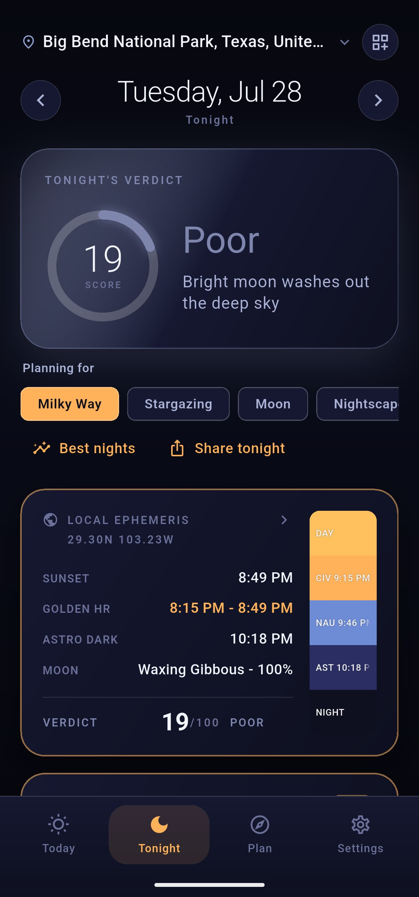

The bright heart of the galaxy keeps a calendar, and so does the moon. Almanox reads both for exactly where you stand: when the core rises, how high it climbs tonight, and the precise moonless stretch of true darkness in which to shoot it.
Rise time, peak altitude, and whether it is up at all - for your latitude, not a generic chart.
The Milky Way's band arches over every clear night, but the photograph is the core - the bright, dense heart of the galaxy, crowded with star clouds and dark dust lanes. The rest of the band is a faint wash by comparison. When photographers plan a Milky Way night, the core is what they are planning around.
The core keeps a season. From the northern hemisphere it is a nighttime target roughly from February to October: in late winter it clears the horizon only in the last hours before dawn, by early summer it is up for most of the night, and by autumn it hangs in the evening sky and sets early. Outside that season it is simply not there after dark, and no gear or location changes that.
Almanox settles the question for tonight in one glance. The Milky Way panel shows the core's rise time, the peak altitude it reaches from your latitude, and whether it is up at all. If the core never clears your horizon tonight, it says so before you pack the tripod, not after.

Astronomical darkness with the moon down - the only hours that matter.
A dark location is half the equation; the sky above it has to be dark too. The dark-sky window is the moonless stretch of astronomical darkness: it opens when the sky reaches full darkness and the moon is below the horizon, and it closes at astronomical dawn or at moonrise, whichever arrives first. That window, and only that window, is when to shoot the core.
Almanox lays the whole night out as four readouts:
Moonlight is the quiet spoiler of Milky Way nights. A bright moon scatters light across the whole sky and washes the core's contrast away; even far from the moon itself, the faint structure you drove out to capture flattens into haze. Almanox factors moon interference directly into the Tonight verdict and prints moonrise and moonset beside the window, so you can see at a glance whether the moon leaves before your session or gatecrashes it halfway through.
Astronomical darkness begins when the sun is more than 18 degrees below the horizon and its light stops brightening the sky entirely. Twilight can look dark to the eye long before it is dark to a camera sensor.
Same core, same night, a very different sky depending on where you stand.
The core's geometry changes with latitude more than any other target in the sky. From mid-northern latitudes it never climbs far above the southern horizon - it skims low across it, which is why the peak altitude number is worth checking before you commit to a long drive. A core peaking around twenty degrees needs a clean, unobstructed view to the south and rewards compositions built over a low foreground. Near the equator the core rides high overhead, and from the southern hemisphere it climbs higher still, with a longer season to match.
This is why Almanox refuses to serve a generic chart. Rise, peak, window, and moon are all computed on your device, for your exact coordinates, fully offline - no server, no account, no signal required. Stand somewhere new, and every number on the page moves with you.
Milky Way & Dark-Sky Windows is part of Almanox Pro - a one-time purchase, no subscription, no account. Everything on this page is computed on your device, offline.